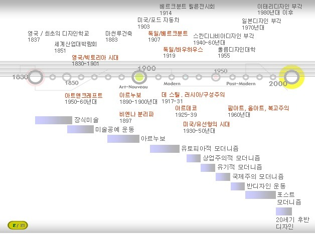

18세기 산업혁명으로 인하여 사회 전분야가 변화되고 공업과 기계생산에 의해 제품들은 대량생산되었다. 윌리엄 모리스는 기계만능주의가 결국 생활속의 전통적인 미를 파괴할 것이라고 주장하였으며, 옷감, 가구, 인쇄 등의 응용미술의 여러 분야에서 수공업이 지니는 아름다움을 회복시키기 고자하는 중세적 원리에 따른 시도가 미술 공예 운동을 출발시켰다. 이는 근대 디자인사에서 가장먼저 일어난 운동은 영국으로 윌리엄 모리스가 고딕 부흥양식의 대표적인 건축가인 퓨진(A.W.Pugin)과 스승인 존 러스킨의 영향을 받아 예술의 민주화를 주장한 수공예 부흥 운동이다. 근대 디자인 사에서 미술과 공예의 회복을 주장한 점에서 근대 미술 운동의 시초라 불리고 있다.
모리스는 1861년 모리스 마샬 포크너 상회(Morris, Marshallm, Faulkner Co)라는 회사를 설립하고 질이 높은 벽지, 염색직물, 스테인드글라스, 양탄자, 실내장식용품 등을 스스로 창조적이고 예술적인 제품을 수공업의 형식으로 디자인 하고 제작하였다. 런던의 레드 라이온 스퀘어에서 운영 되었고 신 고딕 및 중세양식의 물품을 전문적으로 디자인하고 제작하였으며 모리스가 “공식가구”라고 부르던 것은 장엄하고 정교하며 반면에 “일상가구”라고 묘사하였던 유형은 극도로 단순한 것이다.
부유층의 지나친 사치심을 조장하리라는 측면을 인정하였던 공시가구 모든 효과들이 풍요로운 상태를 성취하는 것을 목표로 하고 있었다. 형태와 모양은 단순하고 평범하며 선적이거나 유기적인 형태로 제작되었다. 양식의 가장 순수한 형태라는 측면에서 볼 때 장식은 제작과정에서 주어진 것이다. 자연의 식물, 새, 동물의 형태들은 강력한 영감의 원천이며 대가로 간주되고 있는 윌리엄 모리스는 직물, 벽지 디자인에서 나타나고 있는 본질적으로 평평하고 2차원적인 양식화된 패턴 속에서 형태들을 사용하였다.
